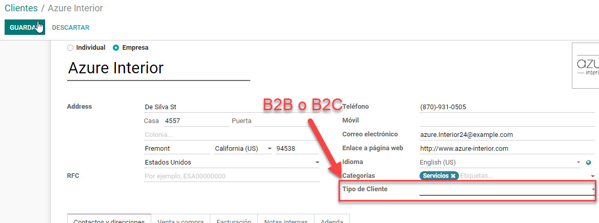
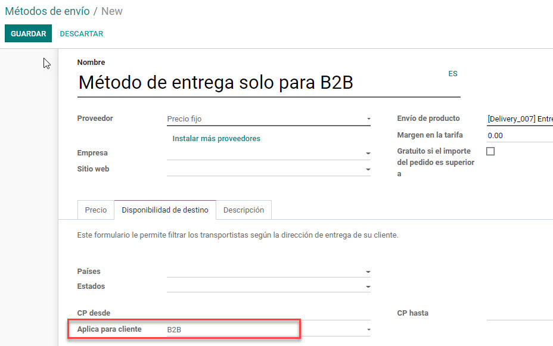
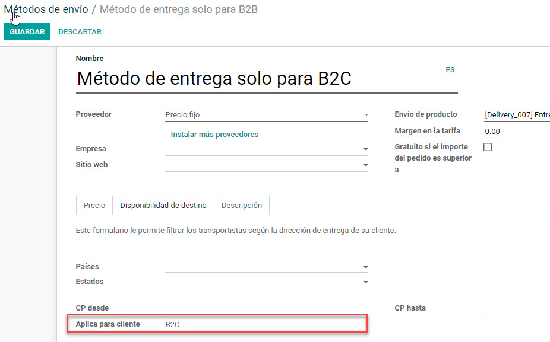

Condicion previa
La aplicacion nos mostrara un nuevo campo de seleccion en el cliente que nos permitira clasificarlo como un cliente como cliente B2B o cliente B2C. Lo primero que se necesita es realizar esta clasificacion a los clientes. Dependiendo de esta clasificacion es que el metodo de pago se mostrara o no en la venta.

Configuracion de metodo de entrega b2b
Creamos nuestro metodo de entrega en el menu Ventas/Configuracion/Ordenes de venta/Metodos de envio. Para que este metodo de envio sea visible unicamente a clientes B2B, se debera seleccionar B2B en el campo Aplica para cliente. En caso que se requiera que el metodo de envio se muestre tanto para clientes b2b como para clientes b2c, se debera dejar vacio el campo.

Configuracion de metodo de entrega b2c
Creamos nuestro metodo de entrega en el menu Ventas/Configuracion/Ordenes de venta/Metodos de envio. Para que este metodo de envio sea visible unicamente a clientes B2C, se debera seleccionar B2C en el campo Aplica para cliente. En caso que se requiera que el metodo de envio se muestre tanto para clientes b2b como para clientes b2c, se debera dejar vacio el campo.

 TOH SOLUCIONES DIGITALES
TOH SOLUCIONES DIGITALES